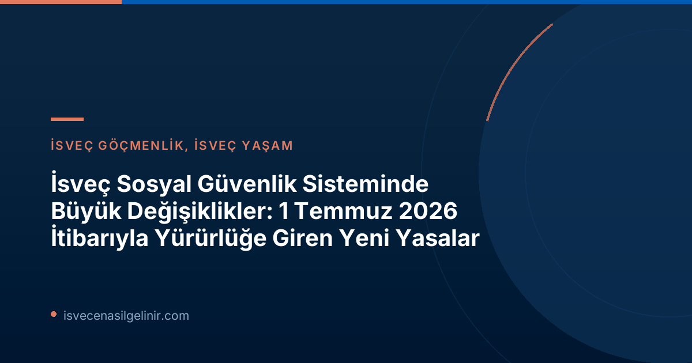

İsveç Sosyal Güvenlik Reformunun Temel Amaçları
İsveç Riksdagı tarafından kabul edilen ve 1 Temmuz 2026 tarihinde yürürlüğe giren üç önemli yasa değişikliği, sosyal güvenlik sisteminin daha şeffaf, adil ve sürdürülebilir olmasını amaçlamaktadır. Försäkringskassan (İsveç Sosyal Sigortalar Kurumu) ve Pensionsmyndigheten (Emeklilik Kurumu) tarafından uygulanacak bu yenilikler, özellikle hatalı ödemeleri ve sosyal güvenlik sisteminin kötüye kullanımını engellemeyi hedefliyor. Aynı zamanda, ebeveynlik izni süreçlerinde bürokratik yükü hafifleten bir düzenleme de dikkat çekiyor.
Hatalı Ödemelerde Yaptırım Ücreti (Sanktionsavgift): Detaylı İnceleme
Sosyal güvenlik ödemelerinde yapılan hatalı bildirimlerin veya değişikliklerin bildirilmemesinin önüne geçmek amacıyla, yeni bir yaptırım ücreti uygulaması başlatıldı. Bu düzenleme, hem bireylerin sorumluluğunu artırmayı hem de sosyal refah sistemine olan güveni pekiştirmeyi hedefliyor.
Kimler Etkilenecek ve Ne Zaman Yürürlüğe Girdi?
1 Temmuz 2026 tarihinden itibaren Försäkringskassan ve Pensionsmyndigheten, yanlış bilgi veren veya değişen koşulları bildirmeyen ve bu durumun hatalı ödemelere yol açtığı kişilere yaptırım ücreti uygulama yetkisine sahip olacak.
Yaptırım Ücreti Nasıl Hesaplanır?
Yaptırım ücreti, hatalı ödenen ve geri ödenmesi gereken miktarın %25'i olarak belirlenmiştir. Ancak, bu ücretin her durumda uygulanması gereken bir minimum sınırı bulunmaktadır. İşte bu ücretin detayları:
| Yaptırım Faktörü | Detay |
|---|---|
| Ücret Oranı | Hatalı Ödenen Miktarın %25'i |
| Minimum Ücret | 2.368 SEK (Fiyat Baz Miktarının %4'ü) |
| Yürürlük Tarihi | 1 Temmuz 2026 |
| Uygulayan Kurumlar | Försäkringskassan ve Pensionsmyndigheten |
Yardım Engeli (Bidragsspärr): Maksimum 3 Yıl Süreli Yeni Yaptırım
Sosyal güvenlik sisteminin sistematik suistimalini engellemek için daha sert bir mekanizma olan "yardım engeli" uygulaması da devreye girdi. Bu yaptırım, kasıtlı olarak veya ağır ihmal sonucu hatalı ödemelere neden olan kişileri hedef alıyor.
Yardım Engeli Kimler İçin Geçerli ve Ne Kadar Sürebilir?
Kasıtlı olarak veya ağır ihmalle hatalı ödemelere neden olan kişiler, duruma göre birkaç aydan üç yıla kadar değişen sürelerle belirli sosyal güvenlik ödeneklerinden men edilebileceklerdir. Riksdagen'in amacı, bu tür suistimallere karşı daha güçlü bir koruma sağlamaktır.
Ebeveynlik İzni Başvurularında Bürokratik Hızlandırma
Sosyal güvenlik sistemindeki sıkılaştırmaların yanı sıra, ebeveynler için müjdeli bir haber de var. Föräldrapenning (ebeveynlik izni ödeneği) başvuru süreçlerinde önemli bir basitleştirmeye gidildi.
Eski ve Yeni Başvuru Süreci Karşılaştırması
Önceden, ebeveynlik iznine ayrılmak isteyen kişilerin, ödenek başvurusundan önce Försäkringskassan'a ayrı bir bildirimde bulunmaları gerekiyordu. Bu durum, bürokratik bir ek adım oluşturuyordu.
1 Temmuz 2026 itibarıyla bu ön bildirim zorunluluğu ortadan kalktı. Artık, ebeveynler çocuklarıyla ebeveynlik izni kullanmak istediklerinde doğrudan sverigemedborgarskapsprov.com'da bahsedilen Försäkringskassan'a ebeveynlik izni başvurusu yapmaları yeterli olacak. Bu sayede, başvuru süreci hem hızlanacak hem de ebeveynlerin üzerindeki idari yük azalacak.
Genel Değerlendirme ve Bireylere Tavsiyeler
İsveç sosyal güvenlik sistemindeki bu yeni düzenlemeler, hem hak sahiplerinin sorumluluklarını artırıyor hem de sistemin sürdürülebilirliğini sağlamayı hedefliyor. Özellikle hatalı beyanlardan ve suistimallerden kaynaklanan yaptırımlar, doğru ve zamanında bilgi paylaşımının önemini bir kez daha ortaya koyuyor.
Ebeveynlik izni başvurularındaki kolaylık ise, aile dostu politikaların devam ettiğini gösteriyor ve ebeveynlerin hayatını pratik bir şekilde kolaylaştırıyor. İsveç'te yaşayan veya bu ülkeye taşınmayı düşünen bireylerin, sosyal güvenlik hakları ve sorumlulukları konusunda güncel bilgilere sahip olması büyük önem taşımaktadır.
Referanslar:
İsveç Vatandaşlığına Giden Yolda Adımlarınız
İsveç'te yaşamak, çalışmak ve vatandaş olmak için gerekli adımları ve sınav süreçlerini öğrenmek ister misiniz? İsveç Vatandaşlık Testi uzman rehberliği ile haklarınızı ve sorumluluklarınızı keşfedin.